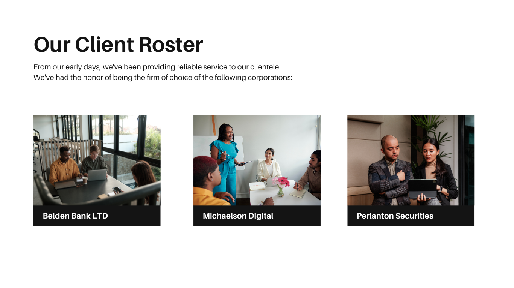

Dashboard User Experience Design
Designing a dashboard with a focus on user experience is crucial to ensuring that users can quickly access and understand critical data. A well-designed dashboard should prioritize clarity and simplicity, displaying only the most relevant information in an intuitive layout. Grouping related data, using effective color schemes, and providing customizable options all contribute to a dashboard’s usability. By incorporating responsive design and accessibility features, dashboards can cater to a wide range of users and devices. The goal of UX in dashboard design is to create a tool that is both functional and engaging, allowing users to make informed decisions with ease.
HOME Page
A dashboard designed with a strong focus on user experience can transform the way users interact with data. Effective dashboards are intuitive, visually engaging, and tailored to present key insights without overwhelming the user. By organizing data into clear, accessible sections, using interactive visuals, and providing customization options, dashboards empower users to make informed decisions at a glance. Prioritizing responsive design ensures the dashboard is adaptable across devices, while accessibility features make it usable for all. A well-crafted dashboard isn't just a data display—it's a tool that enhances productivity and clarity in decision-making.
Clients
In Web Development: The client is the user’s device (computer, phone, etc.) that interacts with a server. In this setup, the client sends requests and displays content received from the server, such as a website or app interface. In Design/UX: The client might refer to a customer or business for whom a product, such as a dashboard, is being designed. Understanding the client's needs and preferences is essential for creating a user-centered product that aligns with their goals. In Software Projects: The "client" can also mean the customer who has commissioned the project. Their feedback often guides development phases, ensuring the end product meets their specific requirements.